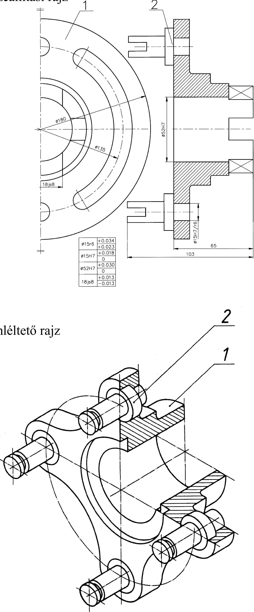

19. Szilárd illesztésű kötések 19.3. Szilárd illesztésű kötések rajzi ábrázolása 1 Sajtolt kötés Feladatkiírás Furatos tárcsa Anyaga: A 44 12.5/ V fVj Szemléltető rajz 294. ábra Zsugor kötés Feladatkiírás <=>£ s S 5 1 ^0.05 Összeállítási rajz Szemléltető rajz Összeállítási rajz 2 295. ábra 1 0Js9 + 0,011 024g6 -0,007 -0,011 -0,020 015f6 -0,016 025H7 + 0,021 -0,027 0 015H7 + 0.018 052G6 + 0,029 0 + 0,010 84
